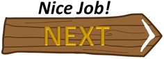

|
How can we apply this to a program? In a game, the monster has to make decisions on where to go in relation to the player. It's not really an artificial intelligence but it can at least move closer or further from the hero. That decision can be made from the slope. Look at these slope vectors. Red vectors are positive and blue vectors are negative. If you have the slope from the moster to the hero, a positive slope means the monster has to move UP. If it is negative, which direction does he need to go? You can also consider how big the slope is. All the red vectors are positive, but the brightest vector has a slope of 1 (e.g. 5/5=1). What about the ones which are above that slope? They are greater than 1 (e.g. 5/3 or 5/1). The ones below are smaller than one (e.g. 3/5 and 1/5). The same goes for negative vectors (e.g. -1/5 or -5/3). Using Slope
Let's try this a few times. What is the slope from the monster to the hero? Write it as an (improper) fraction.  |